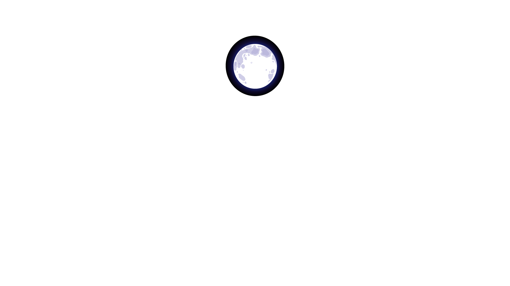
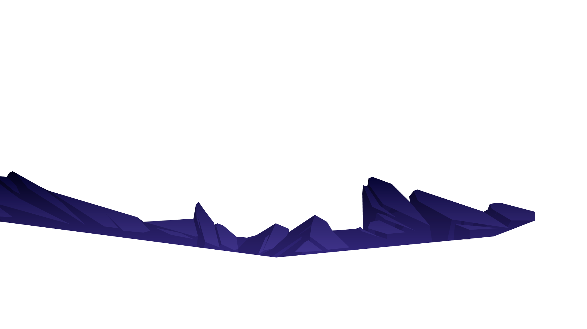
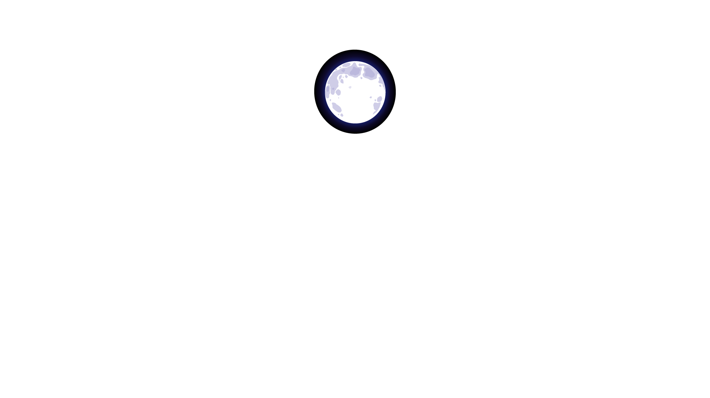
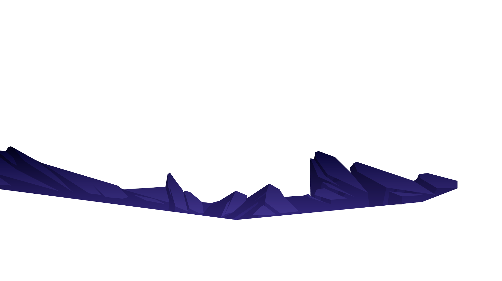
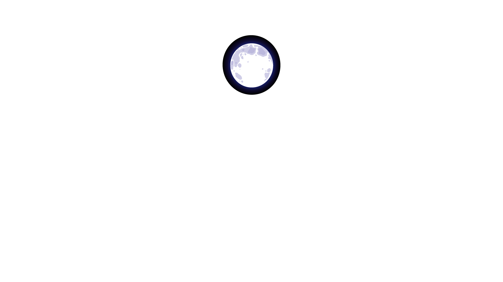
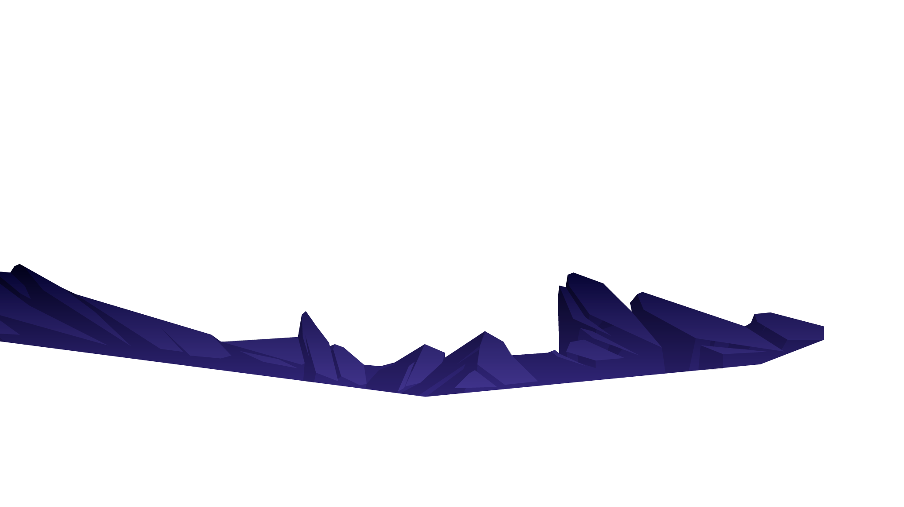
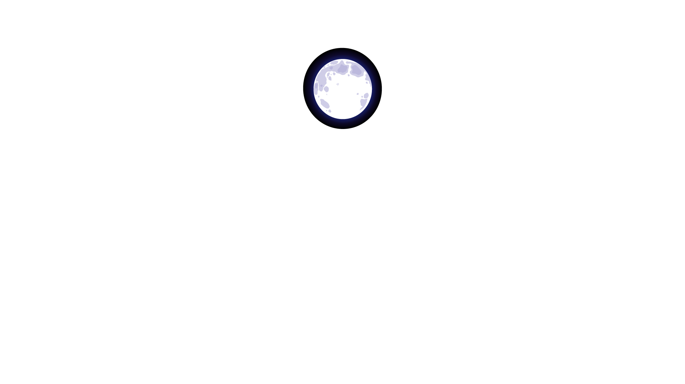
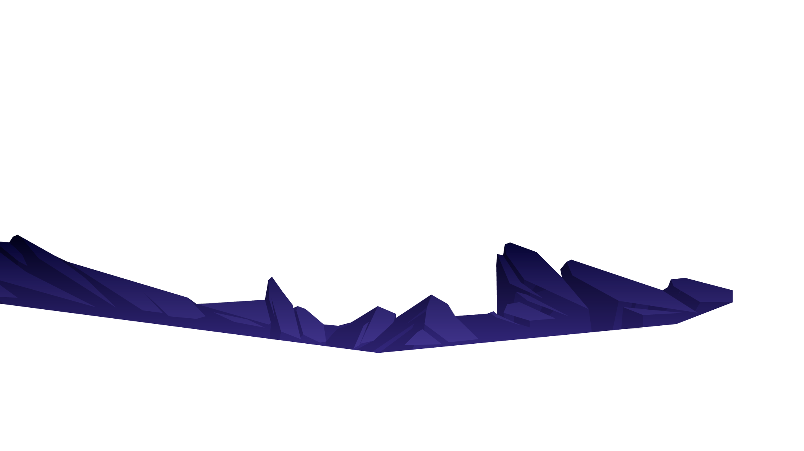

Mi nombre es sebastian cely soy estudiante de decimo semestre en ingenieria de sistemas y computacion en la
UPTC
y soy un desarrollador de software con experiencia en diferentes lenguajes
de programación como java,javascript,c/c++,linux (scripts),mysql,php, así como en metodologías ágiles y de
desarrollo de software.
Mi experiencia
incluye proyectos relevantes los cuales son presentados durante el PORTAFOLIO, y estoy siempre buscando
nuevos desafíos y oportunidades para aprender
y crecer en mi campo. Estoy altamente motivado y comprometido a producir código de alta calidad y a trabajar
en equipo para alcanzar objetivos comunes.Estoy seguro de que puedo contribuir de manera significativa en
cualquier proyecto en el que sea contratado.